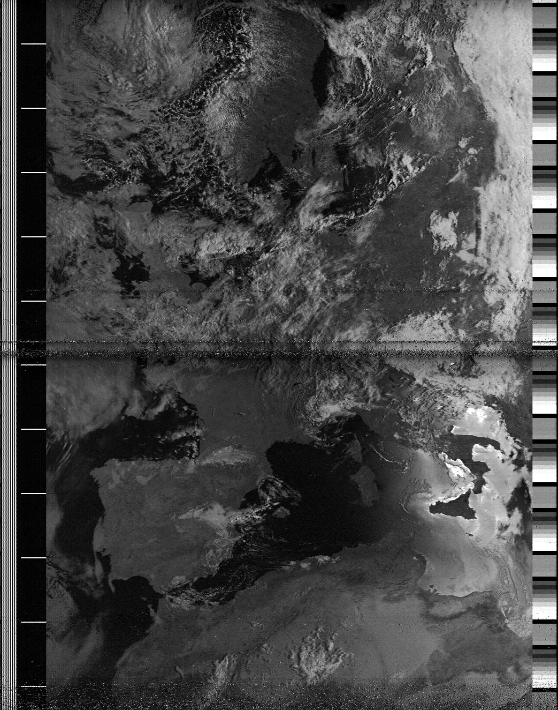
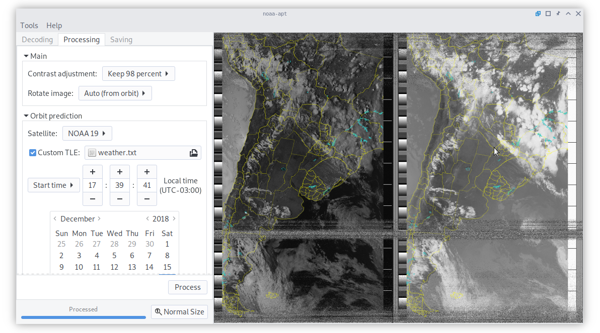

<!-- Main -->
<div id="main" class="wrapper style1">
	<section class="container">

		<div class="row">
			<div id="sidebar" class="4u sidebar">
				<section>
					
					Example image of Argentina, better antennas yield better results.
				</section>
			</div>

		<div id="content" class="8u skel-cell-important">
			<header class="major">
				<h2>Receive and decode images from weather satellites</h2>
				<span class="byline">Free (GPLv3) NOAA APT decoder, available
                    for GNU/Linux, Windows, Raspberry Pi 2+ and OSX</span>
			</header>

			<p>
				<em>noaa-apt</em> takes a recorded WAV file and decodes the image. As an
				example,
				<a href="{{ site.baseurl }}/examples/argentina.wav"> this is a WAV file I recorded using GQRX</a>
				using a RTL-SDR and a double cross antenna.
				When loading that file on <em>noaa-apt</em>, you get as a result
				<a href="{{ site.baseurl }}/examples/argentina.png">this image</a>.
			</p>

			<h3>Why?</h3>

			<p>
				NOAA satellite reception is fun, cheap and relatively easy. You can buy
				a <a href="https://osmocom.org/projects/rtl-sdr/wiki/Rtl-sdr">RTL-SDR</a>
				for less than 30USD, it looks like a USB drive but it has a connector
				for antennas. Using SDR software like <em>GQRX</em> and <em>SDR#</em>
				you can receive FM signals, for example broadcast FM (around 100MHz) or
				better, receive APT signals from NOAA satellites (around 137MHz) and
				then decode them with <em>noaa-apt</em>.
			</p>

			<p>
				I made
				<em>noaa-apt</em> because <em>WXtoIMG</em>, the most popular decoding
				software, it's propietary and
				<a href="https://www.rtl-sdr.com/notice-wxtoimg-website-down/">no longer maintained</a>,
				but you can get old recovered versions from an
				<a href="https://wxtoimgrestored.xyz/">unofficial website</a>. Also, the
				<a href="{{ site.baseurl }}/guide.html#wxtoimg-guide">
					steps required to decode WAV files on it
				</a>
				are not that obvious.
			</p>

			<p>
				<em>WXtoIMG</em> requires WAV files with a sample rate of 11025Hz, also
				needs correct file modification timestamps for post processing. For
				convenience, you can use <em>noaa-apt</em> for resampling your files to
				any sample rate preserving the timestamps. <em>noaa-apt</em> also
				includes a tool that allows to set arbitrary timestamps on your files
			</p>

			<p>
				There are lots of really good
				<a href="{{ site.baseurl }}/alternatives.html">Alternatives</a>, but all
				of them require compilation, Python or don't provide graphical user
				interfaces. So I wanted to create an easy to use alternative for Windows
				users, being useful to advanced GNU/Linux users doing some kind of
				automation too.
			</p>

			<h3>Disadvantages</h3>

			<p>
				<em>WXtoIMG</em> has lots of features you might want that
				<em>noaa-apt</em> does not have, for example false-color images, live
				decoding or map overlay. Anyways, the quality of the black and white
				image should be the same.
			</p>

			<p>
				If you get some kind of error or bad result open a Issue or send me an
				email. Also I'm not a native english speaker so please let me know where
				I made mistakes. Both the code and the website is on the
				<a href="https://github.com/martinber/noaa-apt">GitHub repository</a>.
			</p>

			<h3>Screenshot</h3>

			

			<h3>Features</h3>

			<ul>
				<li>Decode raw images from WAV files.</li>
				<li>Really easy to use GUI.</li>
				<li>You can disable syncing and export every step of the decoding
					process, useful for corrupted recordings.</li>
				<li>Telemetry band reading.</li>
				<li>Resample WAV files preserving modification timestamps.</li>
				<li>Modify timestamps of files.</li>
				<li>Edit filter parameters from a configuration file.</li>
			</ul>

			<!-- Content -->
			<!--
				<div class="6u">
					<section>
						<ul class="style">
							<li>
								<span class="fa fa-wrench"></span>
								<h3>Integer ultrices</h3>
								<span>In posuere eleifend odio. Quisque semper augue mattis wisi. Maecenas ligula. Pellentesque viverra vulputate enim.</span>
							</li>
							<li>
								<span class="fa fa-cloud"></span>
								<h3>Aliquam luctus</h3>
								<span>Pellentesque viverra vulputate enim. Aliquam erat volutpat. Maecenas condimentum enim tincidunt risus accumsan.</span>
							</li>
						</ul>
					</section>
				</div>
				<div class="6u">
					<section>
						<ul class="style">
							<li>
								<span class="fa fa-cogs"></span>
								<h3>Integer ultrices</h3>
								<span>In posuere eleifend odio. Quisque semper augue mattis wisi. Maecenas ligula. Pellentesque viverra vulputate enim.</span>
							</li>
							<li>
								<span class="fa fa-leaf"></span>
								<h3>Aliquam luctus</h3>
								<span>Pellentesque viverra vulputate enim. Aliquam erat volutpat. Maecenas condimentum enim tincidunt risus accumsan.</span>
							</li>
						</ul>
					</section>
				</div>
			-->

		</section>
	</section>
</div>
